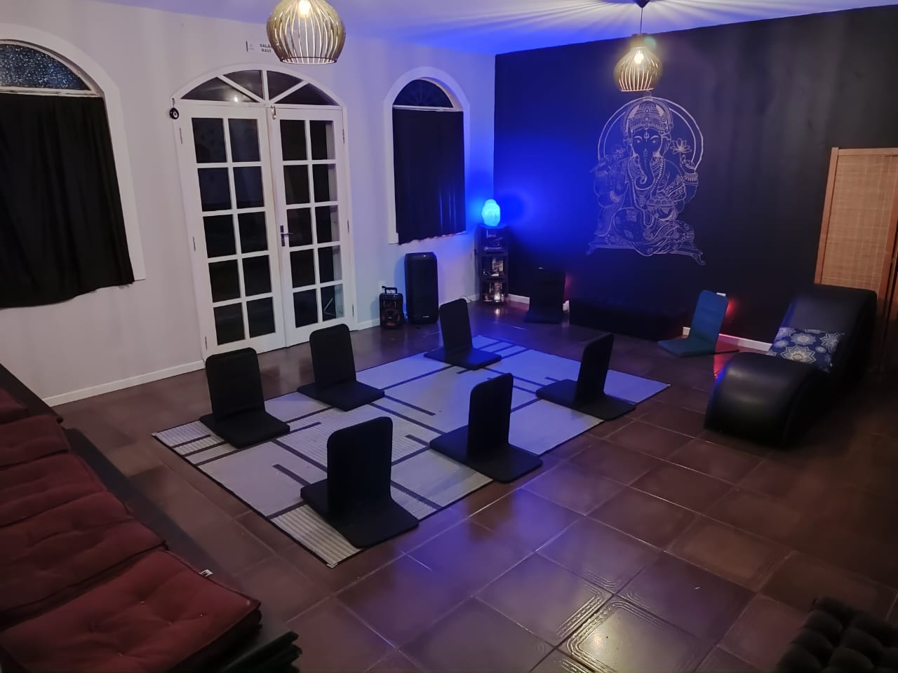
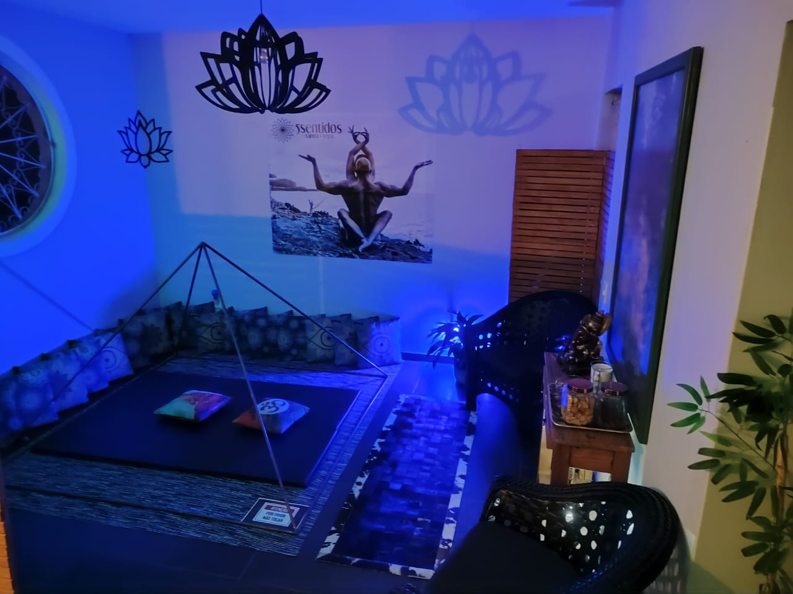
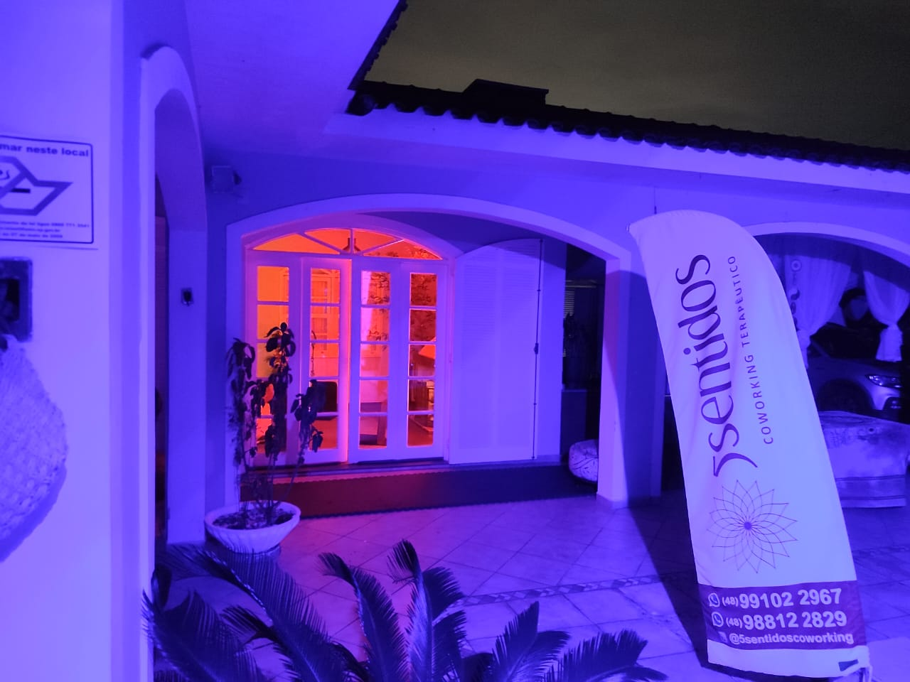
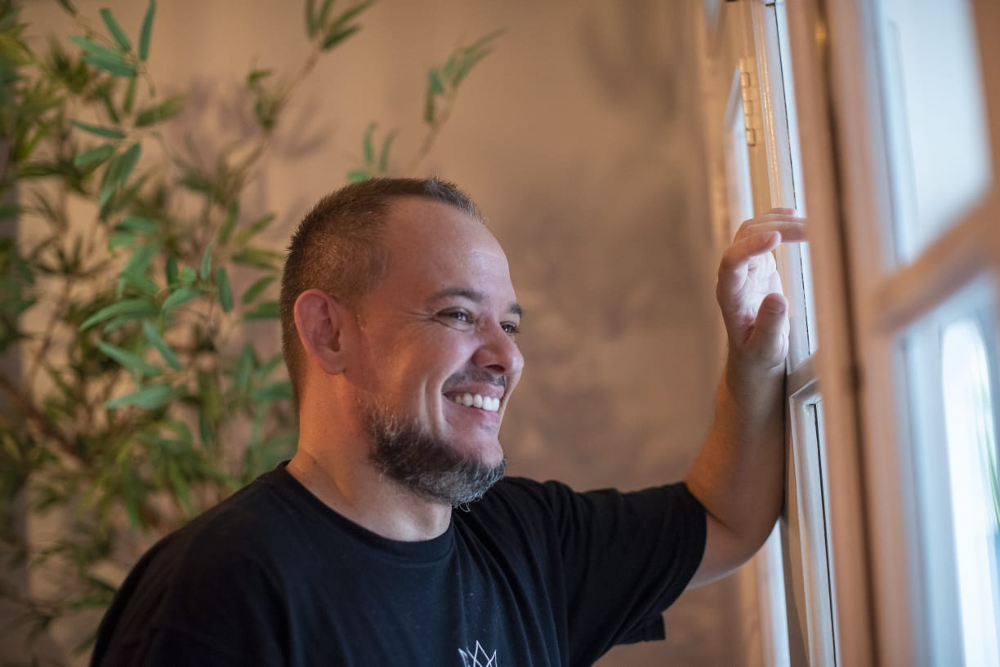
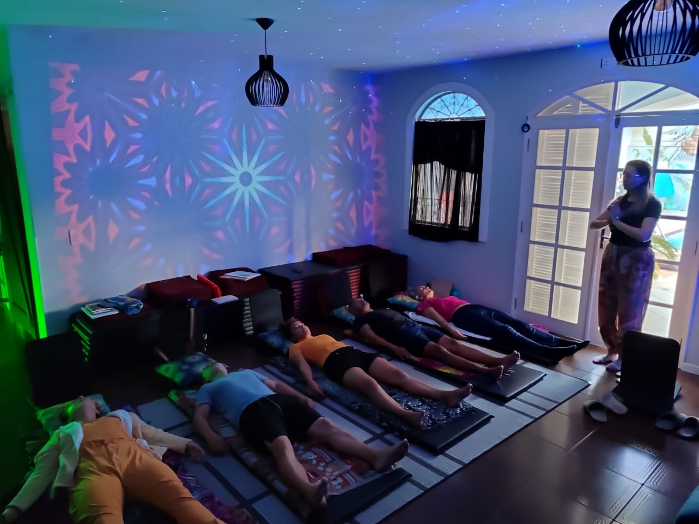
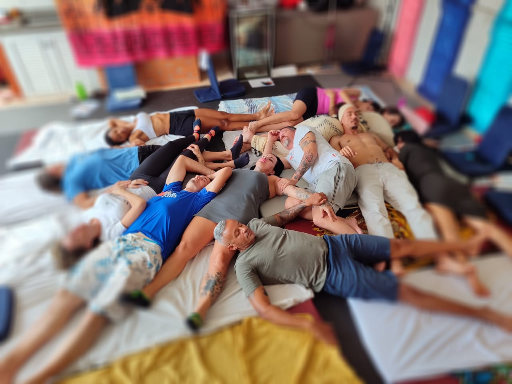
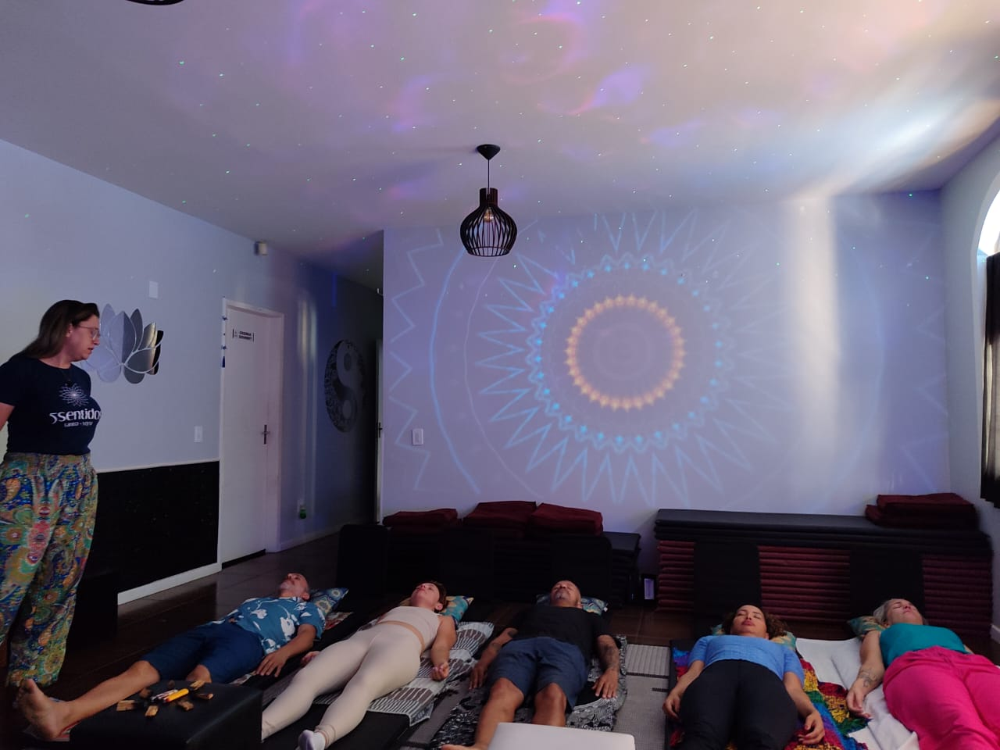

Terapia corporal, somática e sexualidade consciente com ética, sigilo e acolhimento em Florianópolis
Um ambiente pensado para acolher, onde cada detalhe convida ao cuidado e à presença



O Espaço 5 Sentidos foi criado para ser um lugar de respeito, sigilo e acolhimento. Cada elemento do ambiente foi pensado para proporcionar conforto e segurança durante o processo terapêutico. Localizado em Santa Mônica, Florianópolis, oferece um espaço reservado e tranquilo para o seu desenvolvimento pessoal.
Tudo o que é compartilhado no espaço terapêutico permanece protegido por sigilo absoluto.
Um espaço livre de julgamentos onde você pode se expressar com autenticidade e liberdade.
Cada processo respeita o seu tempo, seus limites e sua individualidade.
Conduta profissional pautada por princípios éticos rigorosos e responsabilidade.
Espaço físico reservado, acolhedor e preparado para o seu conforto e privacidade.
Direcionamento honesto e cuidadoso, com foco no seu bem-estar integral.
Cada pessoa chega com uma história única. Aqui, cada jornada é respeitada.
Que buscam reconexão com o corpo, autoconhecimento, cuidado com a sexualidade ou desejam trabalhar questões emocionais em um espaço seguro e acolhedor.
Que desejam aprofundar a conexão, melhorar a comunicação, cuidar da intimidade e fortalecer a relação com consciência e respeito mútuo.
Pessoas em busca de maior consciência corporal, emocional e relacional. Para quem deseja compreender seus padrões e expandir sua presença.
Profissionais da área de saúde e terapias corporais que buscam formação, supervisão ou aprofundamento em sexualidade consciente e terapia somática.
Cada processo é personalizado e co-criado, respeitando a singularidade de cada pessoa
Atendimento voltado para mulheres que buscam reconexão com o corpo, cuidado emocional e consciência sobre sua sexualidade em um ambiente seguro.
Espaço para casais que desejam melhorar a comunicação, aprofundar a conexão e cuidar da relação com consciência e presença.
Trabalho com o corpo como caminho para liberar tensões, reconhecer padrões emocionais e ampliar a consciência de si.
Orientação ética e acolhedora para questões relacionadas à sexualidade, oferecendo informação de qualidade e suporte responsável.
Práticas de meditação, respiração consciente e vivências educativas para aprofundar a presença e a consciência corporal.
Encontros educativos para grupos, empresas e instituições sobre temas ligados à sexualidade consciente, relações saudáveis e desenvolvimento humano.
Entre em contato e conte um pouco sobre o que busca. A primeira conversa é acolhedora e sem compromisso.
Após entender sua demanda, orientamos qual modalidade de atendimento faz mais sentido para você.
Escolhemos juntos o melhor dia e horário para iniciar o processo terapêutico.
Cada sessão respeita seus limites, seu tempo e sua individualidade. O processo é co-criado.

Ravi é Terapeuta Tântrico, Sexólogo Sistêmico e Somático, atuando desde 2016 com terapia corporal, sexualidade consciente e desenvolvimento humano. Ao longo de sua jornada, realizou mais de 6.500 atendimentos individuais e para casais.
Criador do Método 5 Sentidos, seu trabalho integra escuta ativa, consciência corporal, ética terapêutica e respeito absoluto aos limites de cada pessoa. Atende em seu espaço próprio em Santa Mônica, Florianópolis-SC, oferecendo um ambiente seguro e acolhedor para processos de transformação.
Sua abordagem é pautada pela responsabilidade, pelo respeito e pelo compromisso com o desenvolvimento integral de quem o procura.
Uma abordagem integrativa que une presença, consciência e ética no processo terapêutico
O Método 5 Sentidos foi desenvolvido ao longo de anos de prática clínica e formação continuada. Ele integra diferentes saberes terapêuticos em uma abordagem que coloca a pessoa no centro, respeitando seu tempo, seus limites e sua história. Cada pilar sustenta um processo de cuidado ético, profundo e transformador.
Escuta ativa e profunda como base de todo o processo terapêutico.
Estar plenamente presente no momento, sem pressa e sem julgamento.
O corpo como caminho para o autoconhecimento e a integração emocional.
Todo processo respeita o ritmo e os limites individuais de cada pessoa.
Conduta profissional rigorosa, com responsabilidade e transparência.
Foco no crescimento integral e na expansão da consciência de si.
Vivências coletivas que promovem conexão, aprendizado e transformação em comunidade



As vivências em grupo são espaços de aprendizado, troca e conexão. Conduzidas com ética e cuidado, permitem que os participantes ampliem sua consciência corporal, emocional e relacional em um ambiente seguro e acolhedor. Uma experiência de comunidade e crescimento coletivo.
Conhecimento aplicado com profundidade, ética e responsabilidade
Curso intensivo com foco em educação sobre sexualidade, consciência corporal e relações saudáveis. Abordagem ética e informativa.
Duração: 4 horas
R$ 1.500Formação prática e teórica em massoterapia com abordagem tântrica terapêutica. Para profissionais e pessoas em busca de aprofundamento.
Duração: 8h (R$ 2.500) ou 16h (R$ 4.190)
A partir de R$ 2.500Formação completa no Método 5 Sentidos para profissionais que desejam atuar com terapia somática e sexualidade consciente de forma ética e responsável.
Formato: Sob consulta
Consulte valoresAnos de experiência clínica com milhares de pessoas atendidas.
Formação de profissionais que atuam com ética e competência.
O Método 5 Sentidos integra diferentes saberes em uma abordagem única.
Formação e vivências em diferentes contextos culturais e terapêuticos.
Trabalho pautado por princípios éticos rigorosos e transparência total.
Cada processo é construído junto com a pessoa, respeitando sua singularidade.
A primeira sessão é um espaço de escuta e acolhimento. Nela, conversamos sobre suas expectativas, necessidades e limites. É um momento para você conhecer o espaço, entender a abordagem e sentir se faz sentido iniciar o processo. Não há obrigação de continuidade.
Sim, absolutamente. Todo o conteúdo compartilhado durante as sessões é protegido por sigilo total. Sua privacidade e segurança são prioridades fundamentais.
Sim. Há uma modalidade de atendimento específica para mulheres, voltada para reconexão corporal, autoconhecimento, cuidado emocional e questões relacionadas à sexualidade, sempre em um ambiente seguro e com respeito absoluto.
Sim. O atendimento para casais é voltado para melhorar a comunicação, aprofundar a conexão e cuidar da relação com consciência e respeito mútuo.
Os atendimentos são prioritariamente presenciais, no Espaço 5 Sentidos em Santa Mônica, Florianópolis-SC. Algumas orientações e acompanhamentos podem ser realizados online, mediante avaliação prévia.
O Espaço 5 Sentidos fica no bairro Santa Mônica, em Florianópolis-SC. O endereço completo é informado após o agendamento, garantindo a privacidade do espaço e dos atendidos.
Terapia somática é uma abordagem que trabalha a partir do corpo para acessar e integrar conteúdos emocionais. Utiliza a consciência corporal, a respiração e o movimento como ferramentas de autoconhecimento e transformação.
Tantra terapêutico é uma abordagem que utiliza princípios do tantra aplicados ao contexto clínico e terapêutico. Trabalha consciência corporal, presença, respiração e energia vital com finalidade de desenvolvimento pessoal, sempre com ética e respeito.
NÃO. Este é um trabalho estritamente terapêutico, pautado por ética profissional rigorosa. Não há qualquer abordagem sensual, erótica ou sexual nos atendimentos. O foco é o desenvolvimento humano, a consciência corporal e o bem-estar integral.
NÃO. Processos terapêuticos são individuais e dependem de múltiplos fatores. Não fazemos promessas de resultados. O que oferecemos é um espaço seguro, um profissional preparado e um compromisso genuíno com o seu processo. Cada jornada é única e respeitamos isso.
A primeira conversa é acolhedora, sem compromisso e com total sigilo. Estou aqui para ouvir você.
Conversar pelo WhatsAppSanta Mônica, Florianópolis-SC